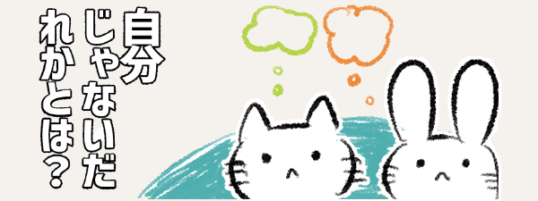
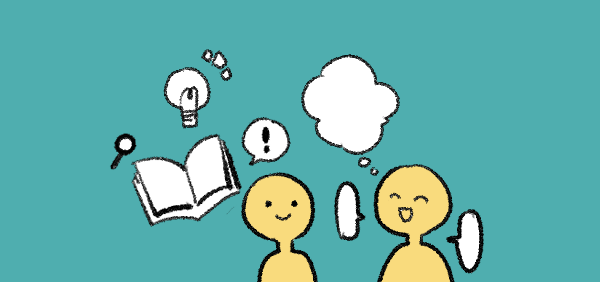
人は、相手がどんな存在か判断するとき
話したり、知識やこれまでの経験から、考えています。
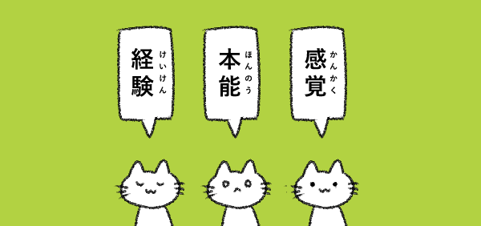
ねこはというと自身の感覚、本能、経験で
目の前の相手が
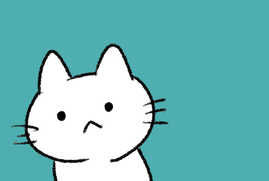
敵ではないかで相手を判断しているようです。
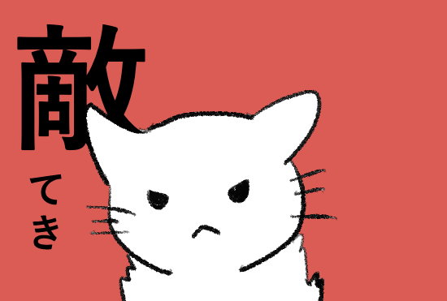
自分にとって敵か
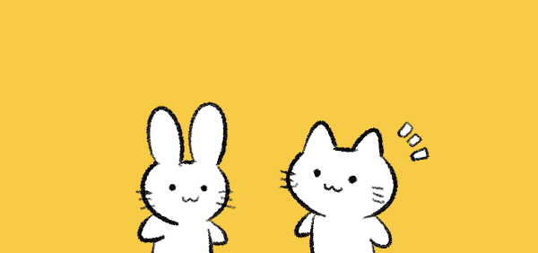
ねこは、知らない生き物に出会っても、
すぐに怒ったり逃げたりはしません。
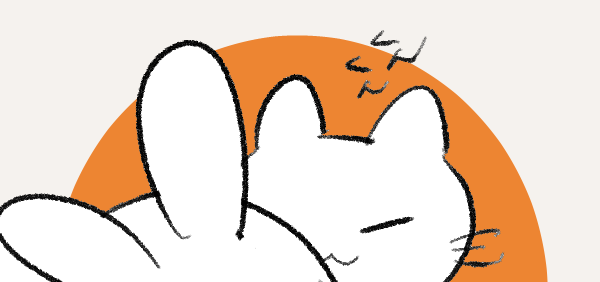
相手がいきなり動いたりしない限り、まずにおいをかいだり、
少しはなれたところから観察したりして、敵かそうでないかを判断します。
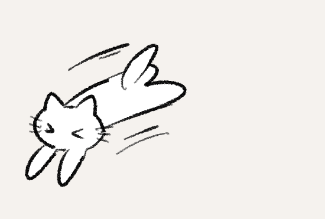
ひとまず逃げる・隠れるもしくは、威嚇や攻撃をして追い払おうとします。
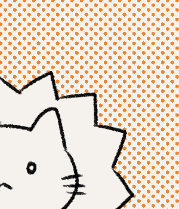
危ないまたはまだよくわからないと思ったら
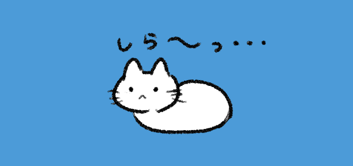
敵ではないと思ったら 興味をなくす。
ムシしたり放っておいたりします。
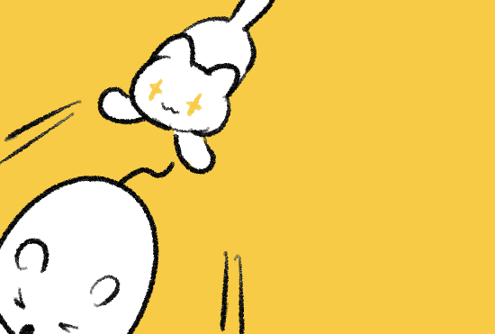
エモノであればつかまえようとします。
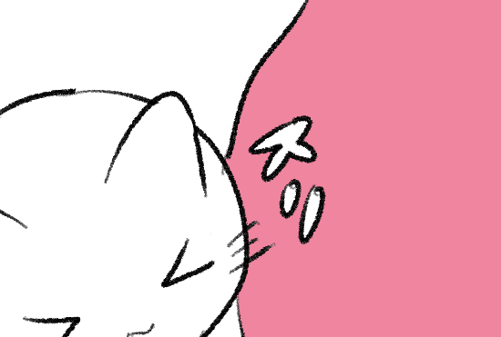
または安心できると思った相手には甘えたり、
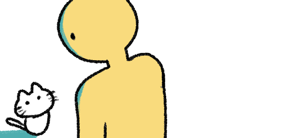
では人のことはどう思っているのでしょう？
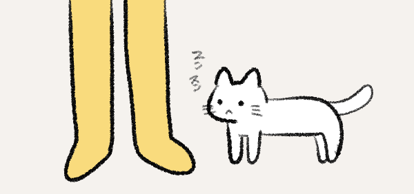
初めて出会った人には他の生き物と同じように調べて、
攻撃してくるかどうかを見極めようとします。
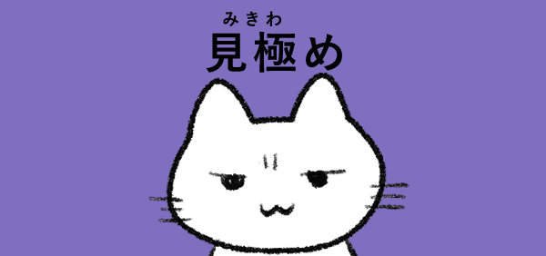
どのようなものもまずは相手を見定めるために、においと動きでその人を見きわめようとします。
人だからといって初めから特別変わった行動をとるようではないようです。
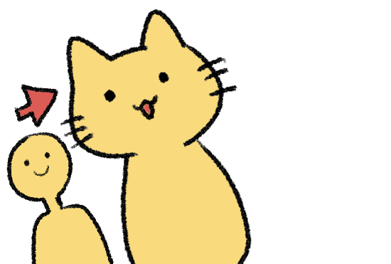
ねこは人を大きいねこだと思っている。なんて考えもあります。
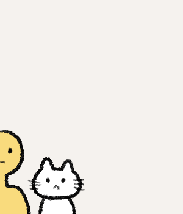
人に慣れているねこは、私たちのことをどんなふうに見ているのでしょうか。
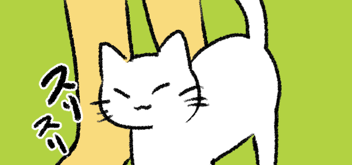
ねこは、親や兄弟にするように、頭をすりよせたり、なめたり、
鼻でにおいをかいだりすることがあります。
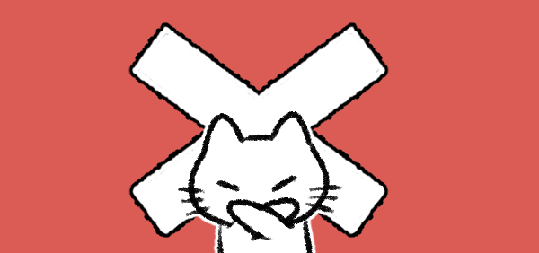
でも、人に対してねこ同士とまったく同じように接しているわけではありません。
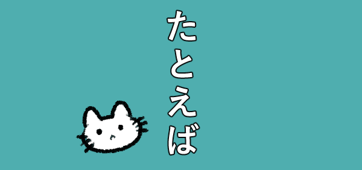
たとえば
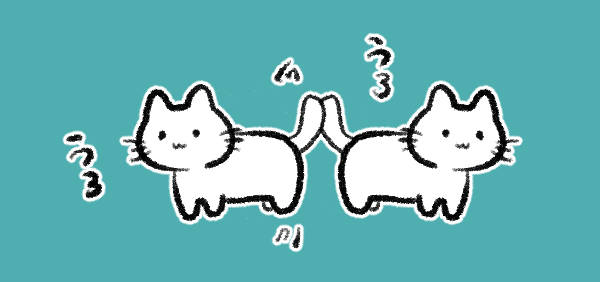
なでてもらおうとしてウロウロするなど、
相手の注意をひくような行動はねこ同士ではほとんど起こらないようです。
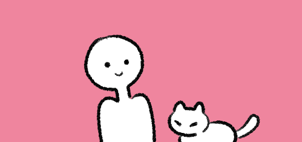
人に対してはより親密的な行動をとる。ということがあるようですね。
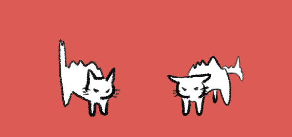
また、ねこど同士の場合は、けんかになるなどで、ライバル関係になることもあります。
けれども、人に対してはそうした争いをしません。
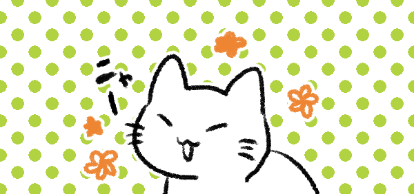
つまり、飼いネコや人に慣れたネコは、人のことを
「ごはんをくれる」「攻撃はしない」「安心できる存在」として写っているのかも。
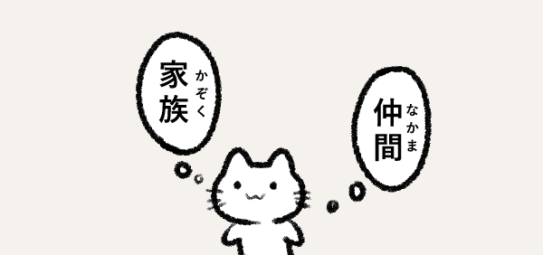
ねこにとって人は、“同じ仲間”というよりも、信頼できる存在。
人で言えば家族に近しいような信頼関係が築ける存在として認識されているのかもしれません。
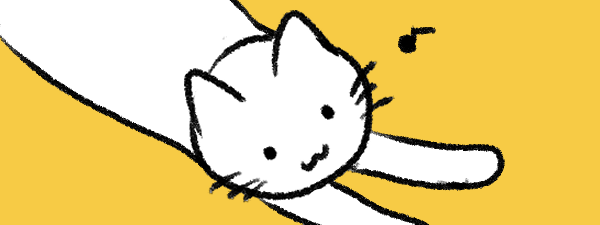
ねこは、常に自分の耳、鼻、目を使い経験と本能を使い、
自身の身をもって相手の存在をありのまま感じている。まっすぐな生き物のようです。
ホームへもどる